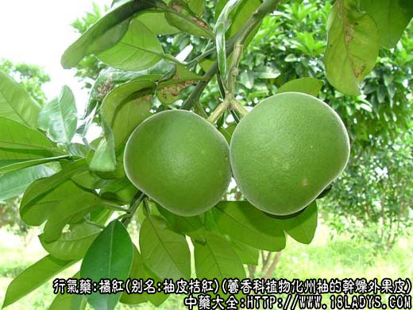
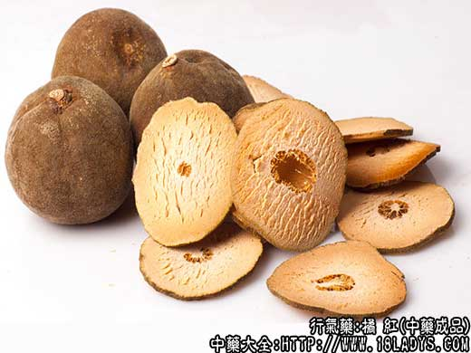

橘红为较常用中药。商品分两类：一、桔类，始载《本草纲目》桔的黄桔皮项下，现商品少见。二、柚类，始载《本草纲目拾遗》名“化桔红”。原为化州柚（带毛）的果皮。因化州柚瓤肉酸苦，不堪食用，用种子繁殖又多变为少毛或无毛品种，故发展受到限制，产品很少，无法满足药用需要，现已为同科植物柚所取代。
一、桔类桔红
别名：云皮。
来源：为芸香科植物常棣小乔木福桔，朱桔等成熟果实的干燥外果皮。均为栽培。
产地：主产于四川、福建、浙江、江西等省。
加工方法：摘取成熟的桔子用刮刀旋下橙红色外果皮，晒晾干燥即成。四川江津、重庆等地食品加工厂，在加工桔饼时必须旋下外层果皮，故四川产品多为食品厂副产品。其次是福建、浙江、江西等地药材经营单位，以鲜桔皮为原料加工的产品，用铲刀将外果皮和中果皮铲开、晒晾干燥即成为桔红和桔白两种商品。
性状鉴别：川云皮呈长条薄片状，宽约2厘米，厚约0.2厘米，长约10厘米，呈不规则的折弯卷缩状。外表面橙红色，密布突起或凹下的小油室，俗称“棕眼”，内表面淡黄色，亦显透光油室腔。质略油润柔韧，气芳香，味苦微辛。福建、浙江等地产品多呈不规则薄片状，其薄如纸，边缘皱折弯曲。外表面黄棕色或紫棕色，内表面淡黄棕色，内外均可见“鬃眼”。质脆易碎，气香，味微苦辛。
以橙红色，条长，气香浓者为佳。
二、柚类化桔红
别名：柚皮桔红。
来源：为芸香科植物常绿小乔木化州柚以及柚（沙田柚、文旦）等成熟或未成熟果实的干燥外果皮。均为载培。
产地：主产于广东、广西、湖南以及四川等省。
加工方法：根据柚种摘取成熟或未成熟的柚果，用刀均匀的把果皮划成5～7裂，余留1/3仍连于一起，由划裂处将果皮剥下摊平呈星角状，用铲刀铲去部分中果皮（柚白）剩余皮层厚约2～3毫米，烤干或晒干，再次清水稍微湿润，五裂者将裂片先端向内折回3厘米左右，呈截角五瓣花状。七裂者对折折好呈交错的山字形，最后用木板压平晒干，每10片扎成一把，即成为商品大五爪红和七爪红。六爪毛化红，为化州柚较幼嫩果实的果皮加工品，剥下果皮后一般不去中果皮、划成6裂片，先端向内折回约2厘米，呈截角六瓣花状，两片合扣压平晒干，10片扎成一把即成。
性状鉴别：1、六爪红：呈高装扎状截角六瓣形，直径8～10厘米，每扎厚15厘米左右。外表面绿褐色，略平滑，密被短毛茸及细密的小油室腔（棕眼）。内皮层黄白色或淡棕黄色。质坚实，折断时外皮层有桔油射出或使部分中果皮受到浸润。气芳香，味苦。
2、七爪红。呈扁扎状重迭交错的山字形，长15～24厘米，高8～12厘米.毛绿七爪；外皮内色以及被毛、含油情况与六爪红基本相同。副毛绿七爪；唯外表皮毛茸较稀疏，含油情况稍差，其余与上品相同。光青七爪；外表面淡绿色或灰绿色，稍粗糙，密生凸凹交错油室小点，内皮层黄白色或淡黄棕色，具多类突起的点状或短线状维管束。质坚脆，易折断，断裂时无枯油外射。中果皮呈海绵状显干枯。气微香，味苦微酸。光黄七爪与光青七爪相同，唯外表皮黄棕色。
3、大五爪。呈扁扎状截角形五瓣花状，直径20～25厘米,每裂片宽5～7厘米。外表面淡黄色至黄棕色，有密集的油室小凹点。内皮层黄白色至污黄色，海绵状。质坚脆。气微香，味酸微苦。
习惯认为毛桔红最好，副毛桔红稍差，光桔红较次，大五爪最差。
炮制：生用。
性味：辛、苦、温。
归经：入肺、胃经。
功能：宽中下气，消痰。
主治：风寒痰嗽，胸隔胀满，呕吐噫气。
橘红性较陈皮更香燥，一般认为下气消痰之力较陈皮好，但和中理胃之力不及陈皮。代表方如橘红丸（成药）；含橘红、半夏、杏仁、贝母、茯苓、麦冬、生石膏、瓜蒌皮、陈皮、生地、桔梗、紫宛、款冬花、苏子、甘草等，此方橘红为首味药，量也较重，治咳嗽痰多、胸闷腹滞。每服1～2丸（每丸重6g），早晚各一次，温开水送下。
橘红中以化州橘红最著名，其辛香之味最为醇厚，对痰多喘咳、肝胃气痛的疗效胜于其他各类橘皮，尤为医者所喜用，但正品化州橘红并不易得，临床上常用柚皮代替。柚皮味微辛微苦。功效不及陈皮，只作健胃用，由于性较苦燥，阴虚者宜慎用。
注：1、除以上商品外，广东尚以直径4厘米左右的化州柚幼果，直接晒干，称桔红珠，质极坚实，油足气香，商品少见。
2、广东、湖南等省柚皮切作6～7瓣全裂，呈两端尖的椭圆形片，称尖化红或柳叶桔红。
3、四川、江西以幼嫩柚果横切两瓣称土桔红或枳实，稍大一些的作枳壳使用。
4、桔白：为桔或柚的中果皮，形如海绵，片薄厚大小不一。白色或黄白色，体轻。气微香，味苦。效用：健脾和胃。